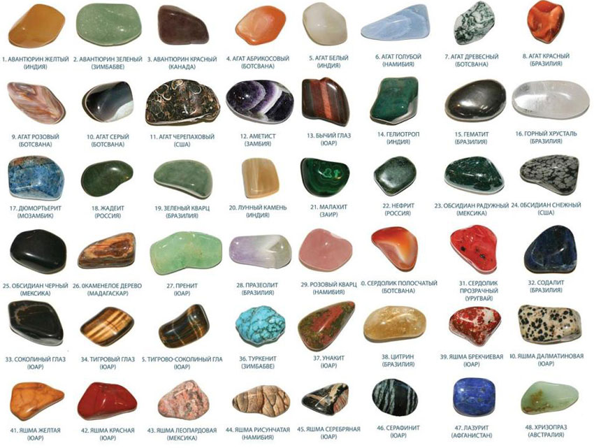
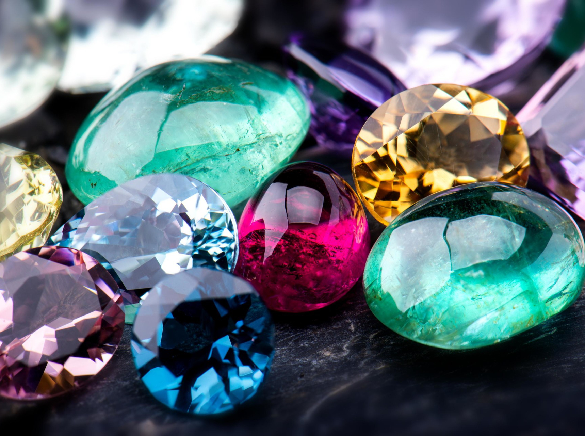
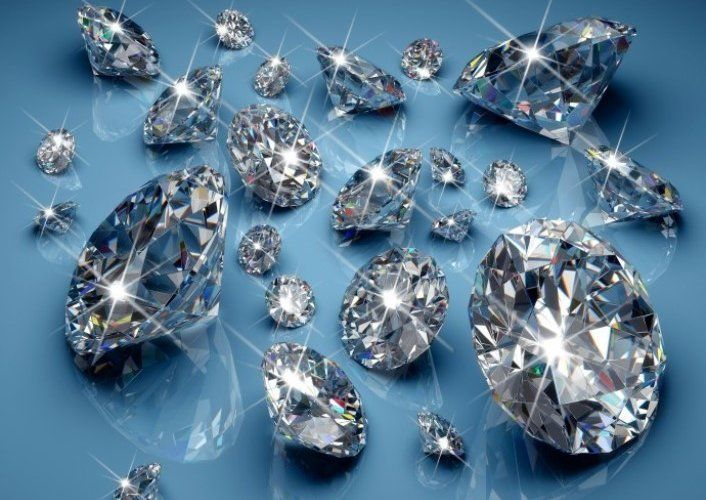
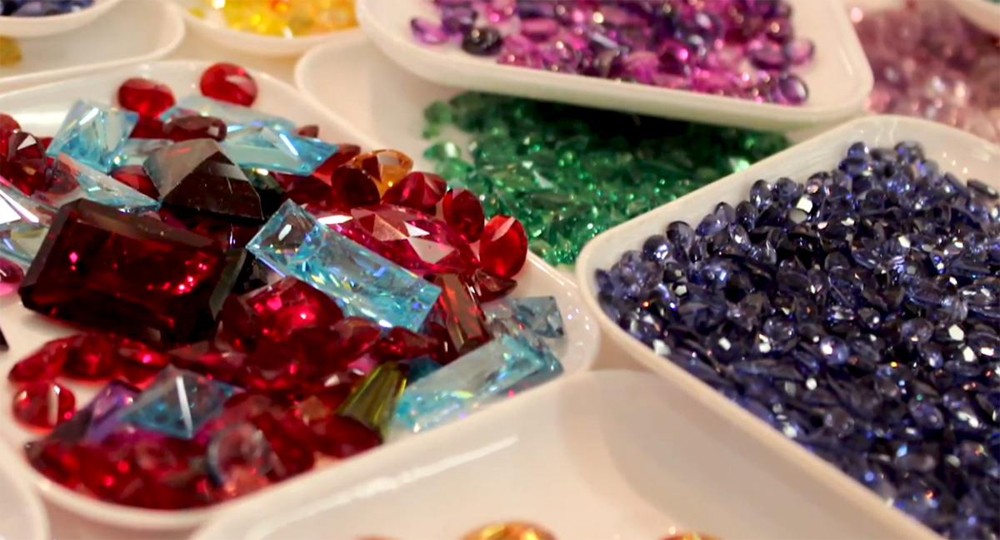

Диаманд
логин:
пароль:
|
Диаманд |
логин: пароль: |
| Каталог | Обратная связь/Контакты | Мы сотрудничае | Обработка камня |
Содержание
На сегодняшний день ювелирная отрасль достигла такого уровня, что модные и красивые изделия делают практически из любого материала. Привычные драгоценные камни зачастую отходят на второй план, уступая место более бюджетным полудрагоценным и поделочным камням. Но отнюдь не все покупательницы знают, чем вставки отличаются друг от друга и почему так разнятся цены у сходных на внешний вид минералов. Чтобы в этом разобраться, совершим небольшой экскурс в историю ювелирной промышленности и рассмотрим каждый вид вставки по отдельности.Драгоценные камниСамые дорогие и самые ценные вставки. В чем же причина высокой стоимости таких минералов? Разберемся по порядку.Первое, что нужно учитывать, драгоценные камни – это природные минералы, сложным путем образовавшиеся в земной коре. Соответственно, драгоценный камень может быть назван таковым только при условии его редкой встречаемости в природе.Приведем некоторые статистические данные из мировой практики. Относительная стоимость добычи наиболее дорогостоящих камней в процентах от стоимости общей добычи в начале XXI века была следующей: изумруды – 43, рубины – 14, опалы – 10, сапфиры – 6, жадеит – 6, бирюза – 5, прочие цветные камни – 16%. Отсюда видно, что высокая стоимость драгоценных камней обусловлена, в первую очередь, сложностью их добычи.Мир драгоценных камней очень велик и, к сожалению, запутан, особенно при поверхностном рассмотрении. На данный момент известно свыше 2,5 тысяч минералов, но только чуть более сотни из них представляют ценность с точки зрения ювелирной промышленности и декоративно-прикладного искусства.Разобраться в хитросплетении разновидностей драгоценных, полудрагоценных и поделочных камней достаточно сложно, а ведь есть еще и ценные природные образования, минералами не являющиеся. Поэтому в рамках этой публикации будет рассмотрено несколько подходов к классификации ценных минералов и природных образований.Какие бывают виды драгоценных камнейНазвания драгоценных камней и минералов (что, собственно, одно и то же) в различных классификациях поданы по-разному, так как единой системы на данный момент не разработано. С общепринятой точки зрения, драгоценными камнями могут считаться исключительно самые красивые, редкие и дорогие минералы и прочие природные образования. Согласно статье 1 Федерального закона от 26 марта 1998 г. №41-ФЗ, официально драгоценными камнями являются исключительно алмазы, рубины, изумруды, александриты и сапфиры, а также жемчуг природного происхождения, то есть, органика. Сюда же иногда относят и янтарь, но при наличии неких уникальных черт – особых вкраплений, большого веса и так далее.Однако и тут существуют нюансы: драгоценные камни в ювелирных изделиях выглядят весьма эффектно и стоят соответствующе. Но очень мелкие или дефектные минералы сильно теряют в стоимости, в то время как полудрагоценные самоцветы крупных размеров и редких расцветок могут быть приравнены по стоимости к драгоценным камням первого порядка.Чем драгоценные отличаются от полудрагоценныхОбъективных параметров, отличающих драгоценные камни от полудрагоценных, не существует. Главным мерилом в данном случае выступает цена: полудрагоценные – недорогие, драгоценные – доступные далеко не всем.В классификации ВНИИ ювелирпрома и вовсе отсутствует понятие драгоценных и полудрагоценных камней: они бывают ювелирными, поделочными и ювелирно-поделочными.Драгоценные камни, добываемые в России, высоко котируются на мировом рынке. Тем более, что в РФ имеются месторождения практически всех драгоценных минералов, за исключением, разве что, рубинов.Как отличить драгоценные камни от искусственных аналоговВ классификации драгоценных камней учитываются их всевозможные физические, оптические и иные характеристики. Самая очевидная характеристика драгоценных камней – их вес. При прочих равных качествах карат крупного минерала будет стоить дороже аналогичной единицы мелкого (иногда – в разы).Карат — единица массы драгоценных камней, принятая ювелирами всего мира. Один карат – это всего-навсего 0,2 грамма! |
|---|
Компания ©Диаманд "Все права защищены" |
|---|